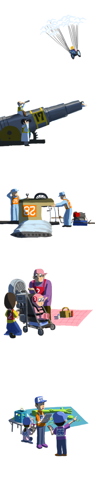

【日本会場ルール】
- チームは 2/8午前中までには結成し、15時を目処にオンライン登録（ http://raceforresilience.org に登録フォームを準備予定）を済ませる。午前中はリクルーティングの時間も用意する予定。
- ハッカソン会場に最低１名は参加する（最終日にプレゼンできるのも会場にいる人のみ）。
- 会場にいないメンバーが後方支援しても良い。
- 2/8現在で、まだローンチ(実装)していないプロダクトやアイディアであれば、既存プロダクトの改良や既存アイディアの改善でも参加OK。
例) safecast チームが、ハッカソン中に新機能を追加して発表しても良い
- 応募できる作品は、アプリ、ハードウェア、仕組みづくり、データ整理、ドキュメント整備など
- メンターがチームに参加しても良い。（但し、審査員メンターのチーム参加は禁止）
- 運営スタッフがチームに参加しても良い。（但し、審査員対応スタッフは禁止）
- ハッカソンは２月中世界各地で行われているので、各会場の許可がとれれば(各自お問い合わせください)、いずれの会場に参加しても良い。会場については、随時 http://codeforresilience.org でアップデートしているので参考にすること。ただし、バーチャル参加をみとめている会場とそうでない会場があるので、確認が必要。
【3月-6月開催第二部グローバル Online Challenge 国際ルール】
- 日本チームのエントリーは、各日本会場での上位一位チームは優先して参加可能。
- ほかの日本チームも、他国からの人を入れてチーム再編成された場合、または他国チームの一部としての参加は可能
- 防災減災に関連するものであれば、広く応募可能
- グローバルに利用できる作品が評価される。
- 発災時のフェーズよりも、事前防災的視点の作品が評価される。
- 国籍は問わない、多国籍メンバー構成のチームは評価される。
- ５月末日までに、作品をブラッシュアップし、プレゼン映像を提出する（必須）。
- ６月中にオンライン上で審査が行われ、上位入賞チーム代表1-２名がロンドンのUnderstanding Risk会議で発表するため招待される。
- チームの人数上限はなし
評価軸は次の６点
- 新規性, 創造性, イノベーション Originality, creativity and innovation
- 問題解決のユーザーニーズ適合性 Addressing of the problem statements and solving real user needs
- UIの品質、使いやすさ Quality of user interface
- 技術的な運用の実現可能性 Technical and operational feasibility
- 経済的・財政的 実現可能性 Economic and financial viability
- チームの取り組み Team effort
【作品のライセンスルール】
- 本ハッカソンに応募できる作品のライセンスについては、以下の条件をクリアしていないと参加できない。尚、イベント向けにスクラッチ開発した部分に対するライセンスであるため、例えば商用ソフトウェアのマクロなどであっても、マクロスクリプト部分に限定される。
- 参加者は、各チームが議論・作成・発表したアイデア、アプリケーション等に関する一切の知的財産権等（商標・デザイン・ノウハウ・コンセプト等を含みます）は、第三者が所有する技術等に関する権利を除き、各チームに帰属するとともに、本イベントの内容が主催者の今後の支援活動・広報等において直接・間接的に使用される可能性があることに同意するものとする。本ハッカソンで応募された作品は、各チームごとに適切なオープンライセンスを明示する。とくに明示がない場合は原則 CC0 ライセンスとする。
http://sciencecommons.jp/cc0/about
- 参加者は、本ハッカソンで開発、発表したアプリケーションのソースコードはhttp://www.codeforresilience.org で公開され、今後、オープンソースとして第三者に使用、改変されることに同意するものとする。オープンソースライセンスの選択は各チームごとに判断し、特に明示がない場合は原則 WTFPL ライセンスとする。但し、WTFPLライセンスは非常に下品な言葉も含まれるため、本ハッカソンで推奨するわけではない。あくまで、ライセンスを明示しないと WTFPLライセンスになってしまうという意味であり、可能な限り各チームごとに作品のライセンスについてのディスカッションを行い、明記することを推奨とする。
http://ja.wikipedia.org/wiki/WTFPL
- ローカルアワード・グローバルアワード入賞作品には世界銀行より入賞認定マークを付与予定。（現在調整中）